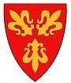

Om oss
Engasjerte jenter satte seg ned i 1994 og stiftet et nytt buekorps for jenter. De var stort sett tidligere medlemmer av datidens jentebuekorps, Vågens Bataljon, som senere ble nedlagt. Dagens medlemmer ...
Engasjerte jenter satte seg ned i 1994 og stiftet et nytt buekorps for jenter. De var stort sett tidligere medlemmer av datidens jentebuekorps, Vågens Bataljon, som senere ble nedlagt. Dagens medlemmer ...